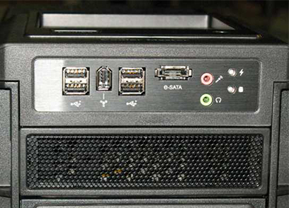

Alegerea unei carcase
Atunci cand cumperi o carcasa nu trebuie sa te gandesti doar la placa de baza ci si la cate dispozitive , interne sau externe, ai de gand sa instalezi pe calculatorul tau.
Se cheama External Bays sau Internal Bays, cele de 5,25″ sunt cele externe, cum ar fi CD-ROM, DVD-ROM, iar pe cele de 3,5″ (inch) poti instala Floppy Disk (nu cred ca mai este cazul ) sau Hard Diskuri interne, cititor de carduri.
Un alt lucru care trebuie luat in considerare sunt sloturile extra, care nu sunt altceva decat sloturi menite sa corespunda cu sloturile de pe placa baza.
Racire – Performanta a insemnat caldura, asta este una din problemele actuale, placile video , CPU, toate se incalzesc,
asadar este foarte important sa avem o carcasa cu un sistem de racire eficient/p>
Ventilatoare – In principiu carcasele standard permit instalarea a 2 ventilatoare de obicei unul de 80 sau 90 mm si unul de 120 mm. Bineinteles exista si exceptii in care pot fi instalate mai multe ventilatoare. CU cat ventilatorul este mai mare cu atat poate lucra cu mai putine rotatii per minut (RPM) insemnand mai putin zgomot.
Este deci si acesta un lucru important, nu doriti sa auziti zgomote puternice de la unitatea centrala de fiecare data cand deschideti ultimul joc aparut.
Material - mare parte din carcasele din ziua de azi sunt facut din plastic si otel . Daca considerati ca una din otel este mult prea grea puteti alege o carcasa din aluminiu sau dintr-un aliaj de aluminiu , acestea disipa si caldura mai eficient dar de obicei sunt mai scumpe.

Porturile din fata - De obicei acestea sunt reprezentate de porturi USB sau intrare microfon, audio,etc. Daca nu vreti sa va chinuiti sa ajungeti in spatele carcasei de fiecare data cand vreti sa puneti castile sau un USB Stick atunci aveti grija sa aveti o carcasa cu porturile in fata care va intereseaza.
Fereastra laterala – aici ne referim la carcasele care au sticla lateral si permite utilizatorului sa vada componentele interioare PC-ului. De asemenea cu niste LED-uri luminoase instalate reprezinta un spectacol de imagine minunat noaptea.
Un lucru foarte important in vederea alegerea unei carcase il constituie si bugetul , multi cumparatori au tendinta de a cheltui cat mai putini bani posibili pe carcase , dar acest lucru poate avea consecinte in functie de sistemul care este gazduit in carcasa respectiva .

Utilizatorii care au in sistem de calcul mai modest pot sa opteze pentru o carcasa mai ieftina pe care o pot schimba eventual in viitor.
Utilizatorii care au un sistem de tip gaming sau workstation nu pot alege o carcasa ieftina care nu ofera spatiu destul de mare pentru placi video performante sau componete ale sietmului de racier pe apa.Alergerea unei astfel de carcase poate imipedica componetele sa functioneze la capacitatea maxima si in timp acest lucru poate duce la scurtarea duratei de viata a acestora sau chiar arderea lor .